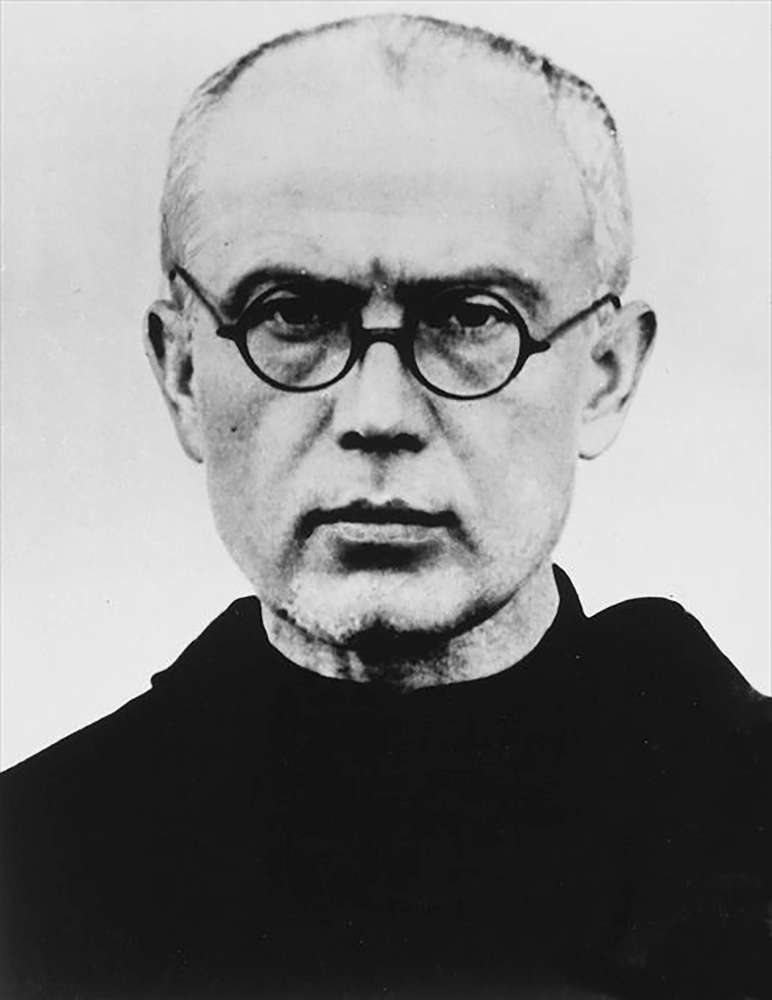
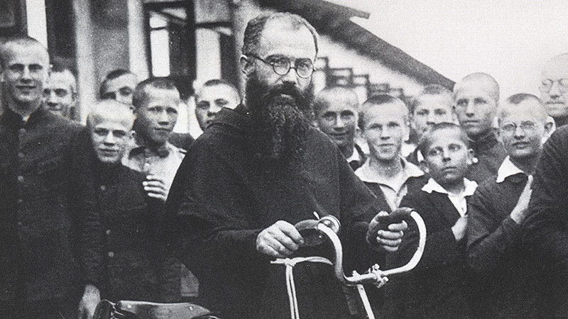
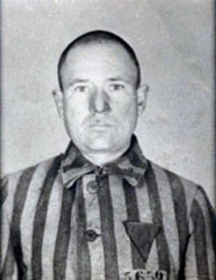

افتح عينيك · أصغِ · تكلّم — لا تجعل الذاكرة تموت
إن كنت شاهداً، ناجياً، قريباً، صديقاً، مسعفاً، طبيباً، صحفياً، أو تحمل ذكرى إنسان رحل، يمكنك أن تترك شهادتك أو ذكراك في السجل الحي.
أنت تختار مستوى الخصوصية والنشر. لا تُنشر الشهادة علناً لمجرد إرسالها؛ المراجعة والموافقة جزء من المسار.ماكسيميليان ماريا كولبة
1894–1941 · راهب فرنسيسكاني، مفكر، ناشر، منظم، مبشّر، وسجين رقم 16670 في أوشفيتز. لم تبدأ قصته عندما اختار الموت مكان رجل آخر؛ تلك اللحظة كانت خاتمة حياة كاملة حاول فيها تحويل الإيمان إلى معرفة وتنظيم واتصال وخدمة.

1 · من رايموند إلى ماكسيميليان
وُلد رايموند كولبة في 8 يناير 1894. دخل الرهبنة الفرنسيسكانية في لفيف سنة 1910 واتخذ اسم ماكسيميليان، وأضاف «ماريا» عند نذوره النهائية سنة 1914. انتقل إلى روما سنة 1912 ودرس الفلسفة واللاهوت ونال درجتي دكتوراه، ثم رُسم كاهناً وعاد إلى بولندا سنة 1919. هذه الخلفية مهمة: كولبة لم يكن ناسكاً منعزلاً، بل صاحب تكوين فكري وتنظيمي استخدمه لاحقاً في مشاريع إعلامية واسعة.
2 · الصحافة كأداة رسالة
بدأ كولبة مشروعاً إعلامياً دينياً ارتبط بمجلة «فارس العذراء الطاهرة» وبفكرة استخدام تقنيات عصره للوصول إلى جمهور واسع. في 1927 أسس قرب وارسو نيبُوكالانوف: ديراً ومركزاً للنشر نما إلى مجتمع كبير يعمل فيه مئات الرهبان. تصفه مصادر سيرته بأنه صار من أبرز مراكز النشر الكاثوليكي في بولندا. كان اهتمامه بالطباعة والإعلام جزءاً مركزياً من إنجازه، لا هامشاً في سيرته.


3 · اليابان: ناغاساكي ومشروع عالمي
في 1930 غادر إلى اليابان، وأنشأ قرب ناغاساكي مركزاً فرنسيسكانياً عُرف باسم «حديقة الطاهرة» وواصل مشروع النشر باللغة اليابانية. تكشف هذه المرحلة عن طموحه العالمي واستعداده للعمل خارج محيطه البولندي. عاد إلى بولندا سنة 1936، وكان يعاني من مشكلات صحية بينها السل بحسب مصادر فرنسيسكانية.
4 · الحرب: المأوى قبل السجن
مع اندلاع الحرب العالمية الثانية تضررت نيبُوكالانوف. وتذكر المصادر الفرنسيسكانية أنها استُخدمت مستشفى وملجأ لآلاف النازحين، وبينهم يهود. هذه النقطة تستحق توثيقاً مستقلاً في أي توسعة لاحقة لأنها تقع في قلب السؤال عن أفعال كولبة الفعلية تجاه المضطهدين خلال الاحتلال.
لا نستخدم هذه المعلومة لمحو الجدل حول بعض الخطاب السابق للحرب؛ الفعل الإنساني والمواد الجدلية كلاهما جزء من السجل التاريخي.
5 · الصفحة الصعبة: الجدل حول اليهود
توجد مناقشة تاريخية حقيقية حول مواد وصور نمطية معادية لليهود ظهرت في البيئة الصحفية الكاثوليكية البولندية وفي منشورات ارتبطت بمشروع كولبة. لذلك لا تقدم LuxDot سيرته كتمثال بلا تعقيد. معاداة السامية كانت متجذرة في أوروبا قبل النازية، وقد لعبت تقاليد مسيحية أوروبية دوراً تاريخياً في انتشارها. المطلوب هنا فحص نصوص كولبة ومنشوراته نصاً بنص، والتمييز بين ما كتبه شخصياً وما نشر تحت إشراف مؤسساته وما نسب إليه لاحقاً. وفي المقابل، توجد شهادات ومصادر عن إيواء نازحين يهود في نيبُوكالانوف خلال الحرب. التناقض لا يُخفى؛ بل يُعرض بوصفه سؤالاً تاريخياً يحتاج إلى دليل محدد.
6 · الاعتقال والطريق إلى أوشفيتز
17 فبراير 1941
اعتُقل في نيبُوكالانوف ونُقل إلى سجن بافياك في وارسو.
29 مايو 1941
سُجل في أوشفيتز وحمل الرقم 16670. يوضح متحف أوشفيتز أن صور سجناء النقل الذي وصل معه لم تبقَ محفوظة.
أواخر يوليو 1941
بعد هروب سجين، اختار كارل فريتزش 10 سجناء من المبنى 14 للموت جوعاً انتقاماً.
الاختيار
كان فرانتشيشك غايونيتشيك، السجين رقم 5659، بين المختارين. خرج كولبة من الصف وطلب أن يأخذ مكانه. وافق فريتزش.
المبنى 11
أُخذ العشرة إلى قبو التجويع. وبعد نحو أسبوعين بقي كولبة وبعض السجناء أحياء، فأُمر بقتل الباقين بحقن الفينول.
14 أغسطس 1941
قُتل كولبة في الزنزانة 18 من قبو المبنى 11.
LuxDot · قراءة في معنى المسؤولية الفردية
7 · فرانتشيشك غايونيتشيك: الحياة التي استمرت
لم يكن غايونيتشيك رمزاً مجهولاً. كان جندياً بولندياً، اعتُقل وأُرسل إلى أوشفيتز، ثم نُقل في 25 أكتوبر 1944 إلى زاكسنهاوزن حيث تحرر. شهد لاحقاً أنه لم يكن يعرف كولبة قبل المعسكر ولم تكن بينهما علاقة شخصية. نجا من الحرب وعاش حتى 1995. لهذا تكتسب التضحية معناها الخاص: لم يمت كولبة لصديق أو قريب، بل لإنسان غريب سمع خوفه على أسرته.
8 · ما بعد الموت: من التطويب إلى «شهيد المحبة»
طوّبه البابا بولس السادس سنة 1971، ثم أعلن يوحنا بولس الثاني قداسته في 10 أكتوبر 1982 بوصفه شهيداً للمحبة. أصبحت قصة كولبة من أشهر الأمثلة الكاثوليكية الحديثة على التضحية بالذات، لكن الذاكرة المسؤولة لا تختزل أوشفيتز في قصة فردية ملهمة: المعسكر جزء من منظومة الاضطهاد والقتل النازية، والهولوكوست كان إبادة منهجية لستة ملايين يهود أوروبيين إلى جانب اضطهاد وقتل مجموعات أخرى.
9 · ماذا أنجز قبل اللحظة الأخيرة؟
- تكوين أكاديمي في الفلسفة واللاهوت في روما
- بناء شبكة نشر ديني جماهيري في بولندا
- تأسيس نيبُوكالانوف سنة 1927 كمركز رهباني وإعلامي
- توسيع المشروع إلى اليابان وناغاساكي منذ 1930
- استخدام الطباعة والتنظيم ووسائل الاتصال كجزء من العمل الديني
- تحويل نيبُوكالانوف في زمن الحرب إلى مكان استضافة ومساعدة للنازحين بحسب المصادر الفرنسيسكانية
- في أوشفيتز، اتخاذ القرار الذي صار خاتمة سيرته: أن يستبدل حياة رجل محكوم بحياته
10 · عدسة LuxDot
الحقيقة الموثقة: حياته، دراسته، نيبُوكالانوف، اليابان، الاعتقال، رقم السجين، استبداله غايونيتشيك، موته وتاريخ إعلان قداسته.
ما يحتاج إلى تدقيق مستمر: حجم أنشطة الإغاثة بالتفصيل، أرقام النازحين، ونسبة المواد الجدلية السابقة للحرب إلى كولبة شخصياً أو إلى منظومته الصحفية.
السؤال المفتوح: هل تُقاس قيمة حياة الإنسان بما أنجزه، أم تظهر أحياناً في قرار واحد يتخذه عندما لا يبقى له شيء يملكه سوى نفسه؟
المصادر الأساسية
- متحف أوشفيتز–بيركيناو — تضحية وموت الأب ماكسيميليان كولبة
- متحف أوشفيتز–بيركيناو — السيرة المختصرة والذكرى 84
- أرشيف أوشفيتز التعليمي — وثائق كولبة وغايونيتشيك
- الحكومة البولندية — سيرة وإنجازات كولبة
- Kolbe Mission — نيبُوكالانوف واليابان والعمل خلال الحرب
- متحف الهولوكوست الأمريكي — السياق التاريخي لمعاداة السامية
الصفحة العربية هي النسخة المرجعية لهذا الملف في الإصدار الحالي، مع الحفاظ على الأسماء الأصلية فقط حيث تفيد التحقق من المصدر.